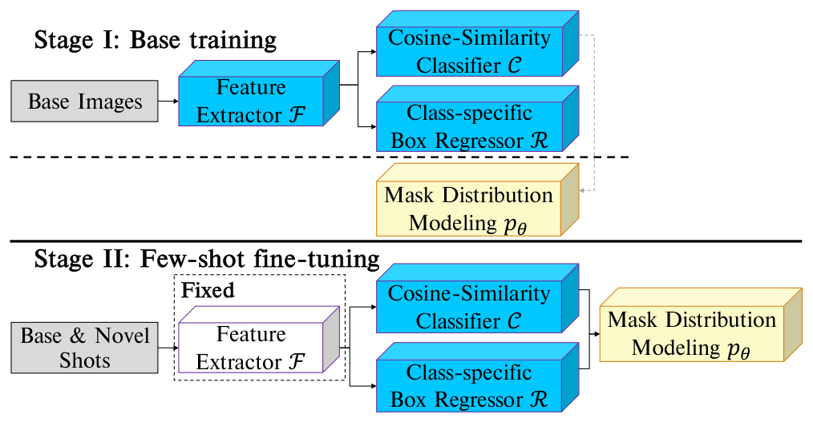
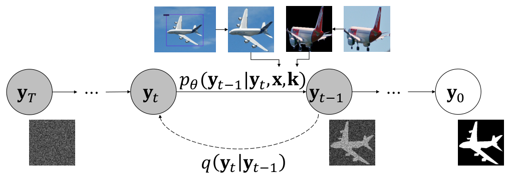
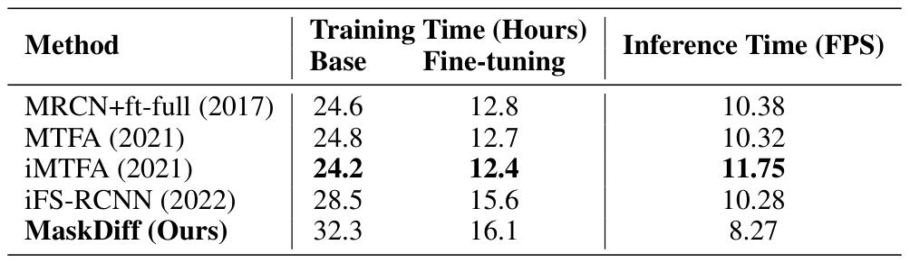
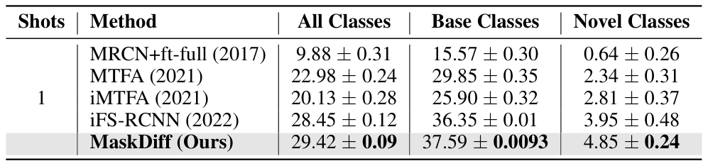
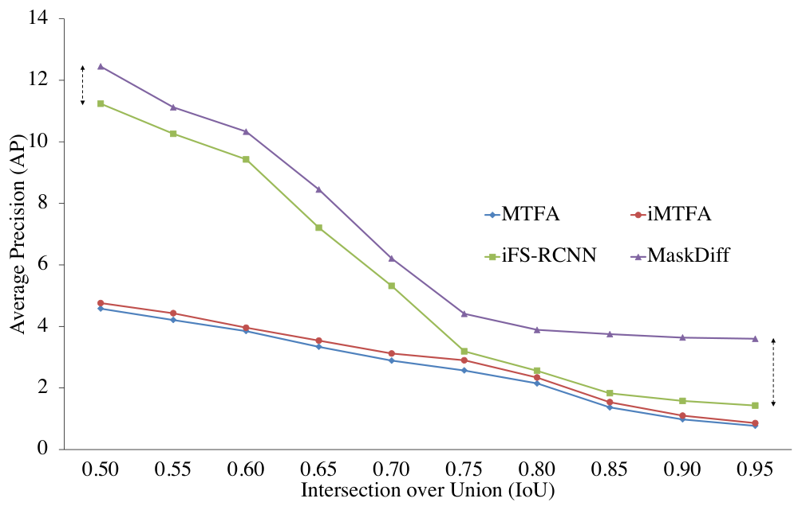
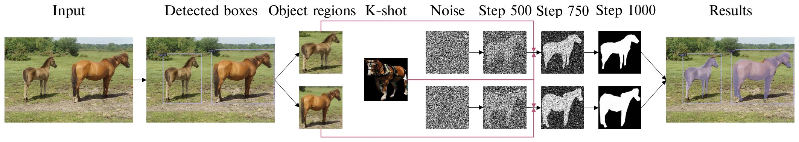

Few-shot instance segmentation extends the few-shot learning paradigm to the instance segmentation task, which tries to segment instance objects from a query image with a few annotated examples of novel categories. Conventional approaches have attempted to address the task via prototype learning, known as point estimation. However, this mechanism depends on prototypes (e.g. mean of K-shot) for prediction, leading to performance instability. To overcome the disadvantage of the point estimation mechanism, we propose a novel approach, dubbed MaskDiff, which models the underlying conditional distribution of a binary mask, which is conditioned on an object region and K-shot information.
Inspired by augmentation approaches that perturb data with Gaussian noise for populating low data density regions, we model the mask distribution with a diffusion probabilistic model. We also propose to utilize classifier-free guided mask sampling to integrate category information into the binary mask generation process. Without bells and whistles, our proposed method consistently outperforms state-of-the-art methods on both base and novel classes of the COCO dataset while simultaneously being more stable than existing methods. The source code is available at: https://github.com/minhquanlecs/MaskDiff.
MaskDiff extends TFA with a mask distribution modeling head that uses a conditional diffusion model to generate binary instance masks from detected object regions and K-shot examples. Classifier-free guided sampling incorporates category information. Training has two stages: train on base classes, then freeze the feature extractor and fine-tune prediction heads on base and novel classes.

Figure 3. Pipeline of diffusion-based two-stage training. In the first stage, the entire object detector (feature extractor, classifier, and box regressor) and the mask distribution modeling head are trained separately on the base classes. In the second stage, the feature extractor is frozen while the cosine classifier, the box regressor, and the mask distribution modeling head are jointly fine-tuned on both base and novel classes. Our mask distribution modeling head is trained based on diffusion (yellow), while the remaining two heads follow the standard object detection training (blue).

Figure 4. Conditional diffusion model for few-shot binary mask segmentation. The directed graphical model transforms the noise from standard Gaussian distribution to the mask representation of objects through an iterative denoising process. Solid arrows indicate the reverse process, while the dashed arrow implies the forward step. y, x, k denote binary masks, object regions and removed background version of K-shot samples, respectively.
Table 4. Runtime of FSIS (1-shot) on COCO dataset.

MaskDiff has the longest training time in the table (32.3 hours for base training and 16.1 hours for fine-tuning) and the lowest inference speed at 8.27 FPS. iFS-RCNN reaches 10.28 FPS with training times of 28.5 and 15.6 hours.
Table 8. Stability of FSIS on COCO-All dataset. MaskDiff is the most stable method with the smallest standard deviation of AP. The best performance is marked in boldface. Results on other K-shot are described in Supp.

On the 1-shot COCO-All evaluation, MaskDiff records the highest AP for all classes (29.42 ± 0.09), base classes (37.59 ± 0.0093), and novel classes (4.85 ± 0.24) among the listed methods. The paper reports this as the most stable method, while results for other shot counts are in the supplement.

Figure 6. MaskDiff preserves spatial information, especially at detailed levels. We compare the performance of MaskDiff with state-of-the-art methods in one-shot instance segmentation at different IoU thresholds. MaskDiff outperforms other methods with large margins at high IoU thresholds, which indicates its ability to segment objects more precisely.
In one-shot inference on COCO novel classes, the visual examples show successful segmentations as well as failures from misclassification, missed detections, and imprecise boundaries.

Figure 5. Inference example of our MaskDiff when training and inference on one-shot setting for the COCO novel classes.
@article{le2024maskdiff,
author = {Le, Minh-Quan and Nguyen, Tam V. and Le, Trung-Nghia and Do, Thanh-Toan and Do, Minh N. and Tran, Minh-Triet},
title = {MaskDiff: Modeling Mask Distribution with Diffusion Probabilistic Model for Few-Shot Instance Segmentation},
journal = {AAAI Conference on Artificial Intelligence},
year = {2024},
}